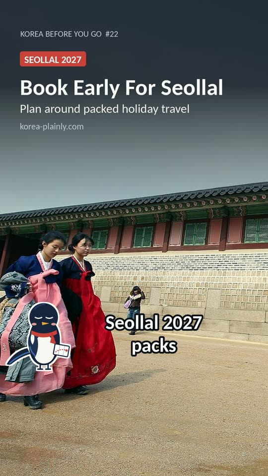

Seollal (설날), the Lunar New Year, is the one time of year when most of Korea goes home. Around a third of the country travels to family, Seoul's roads empty out, and many small restaurants pull down their shutters for a day or two. None of this ruins a trip, but it does change how you plan it. This guide covers the 2027 dates, what really closes, how to handle trains and buses, and what is worth doing while you are there.

Watch the one-minute version
Subscribe for new videosWhen is Seollal in 2027?
Seollal falls on Sunday 7 February 2027. The legal holiday is three days (the day before, the day itself and the day after), and because Sunday is one of them, a substitute holiday is added on the Tuesday. That gives:
- Saturday 6 February: the eve. The heaviest day for leaving Seoul.
- Sunday 7 February: Seollal day. The quietest day, with the most closures.
- Monday 8 February: the day after. Families visit relatives; traffic starts back towards Seoul.
- Tuesday 9 February: substitute holiday (대체공휴일). The heaviest day for returning to Seoul.
Because it follows the lunar calendar, the date moves every year, between late January and mid-February. Koreans call the journey out of the capital gwiseong (귀성) and the journey back gwigyeong (귀경); you will hear both on the news and see them on motorway signs.
What families do at Seollal
- Charye (차례): a morning memorial table for ancestors, laid with fruit, rice cakes and fried jeon. Many families now keep it small or skip it.
- Sebae (세배): children and younger adults make a deep bow to their elders and say the New Year greeting. In return they get sebaetdon (세뱃돈), crisp new banknotes in an envelope.
- Tteokguk (떡국): a clear beef or anchovy broth with sliced rice cakes, eaten on New Year's morning. People joke that a bowl makes you a year older.
- Yutnori (윷놀이): a board game played by throwing four wooden sticks.
What closes and what stays open
Usually open
- Convenience stores (CU, GS25, 7-Eleven, Emart24), the Seoul subway and city buses, which run on a normal holiday timetable.
- Chain cafes such as Starbucks and Ediya, fast-food chains, hotel restaurants and most places in Myeongdong, Hongdae and Insadong that live on tourists.
- Royal palaces and big attractions such as Lotte World and N Seoul Tower. In recent years the four main Seoul palaces, Jongmyo Shrine and the royal tombs have been free to enter over the Seollal holiday.
Often closed
- Small family-run restaurants, especially on 6 and 7 February. A favourite kalguksu or gukbap place may be shut for three or four days.
- Traditional markets such as Gwangjang and Mangwon: busy before the holiday, half-empty on Seollal day.
- Department stores (Lotte, Shinsegae, Hyundai) and big supermarkets (Emart, Homeplus) usually close for one day around Seollal; the day differs by branch.
- National museums, such as the National Museum of Korea in Yongsan, typically close on Seollal day itself and reopen the next day.
- Banks and post offices close for the whole holiday. ATMs in convenience stores still work.
Search a restaurant on Naver Map or KakaoMap before you walk there; many owners post a holiday notice (설 연휴 휴무) on their listing.
Trains, buses and flights
This is the part that needs real planning. KTX and SRT trains for the days around Seollal sell out within hours of release. Korail opens holiday tickets in a special sale roughly three to four weeks ahead (for Seollal 2026 the sale began in mid-January), and seats on the main lines are gone the same day. Any returns appear on the Korail Talk app and the English Korail website in the days that follow, so keep checking.
- Travel on the holiday itself, against the flow. Leaving Seoul on 7 or 8 February, or returning on 6 February, is much easier than going the same way as everyone else.
- Express buses (book on the T-money GO or Bustago apps) also sell out, and a three-hour trip to Jeonju can take six in holiday traffic, even with bus lanes.
- Domestic flights to Jeju and Busan fill up and get expensive; book early or pick other dates.
- Motorway tolls have been waived over Seollal in recent years, which helps if you rent a car, but the traffic is the real cost.
The simplest plan is to be in one city for the whole holiday and move before or after it. Our KTX train guide and intercity bus guide explain how to book.
What to do in Seoul over Seollal
Seoul is at its calmest. Taxis come quickly, the subway is half-empty and palace courtyards fill with families in hanbok rather than tour groups.
- Gyeongbokgung and the National Folk Museum: folk games, tuho (arrow throwing) and New Year events in the courtyards. Gyeongbokgung normally closes on Tuesdays, and 9 February 2027 is a Tuesday, so check the palace website before you plan that day.
- Namsangol Hanok Village (Chungmuro Station, line 3 or 4): kite making, yutnori and rice cake pounding are regular Seollal activities.
- Eat tteokguk: many Korean restaurants that stay open add it to the menu, and hotel buffets serve it on New Year's morning.
Early February is cold, often below zero at night. See Korea in February for the weather and Korean public holidays for the rest of the 2027 calendar.
Practical tips
- Book your hotel early if you want to be in Busan, Gangneung or Jeju over the long weekend; Koreans travel too.
- If you are invited to a Korean home, a fruit box or a box of Korean pears (배) is a safe gift. Bow slightly to the elders and accept food with both hands.
- The greeting is "Saehae bok mani badeuseyo" (새해 복 많이 받으세요), "Receive lots of luck in the new year". Shop staff and taxi drivers will light up.
- Chuseok, the autumn harvest holiday, works the same way, so the same rules apply if your trip falls in September or October.
Holiday opening days and ticket sale dates change every year, so check the official sites or Naver Map closer to the time.
FAQ
When is Seollal 2027?
Seollal is on Sunday 7 February 2027. The public holiday runs from Saturday 6 to Tuesday 9 February, including a substitute holiday on the Tuesday.
Is everything closed in Korea during Seollal?
No. Convenience stores, the subway, chain cafes, hotels, palaces and big attractions stay open. Small family restaurants, markets, banks and some department stores close for one or more days, mostly on the eve and on Seollal day.
Can I travel between cities during Seollal?
Yes, but trains and buses sell out weeks ahead and roads are jammed. Travel against the flow, such as leaving Seoul on Seollal day, or stay in one city and move before or after the holiday.